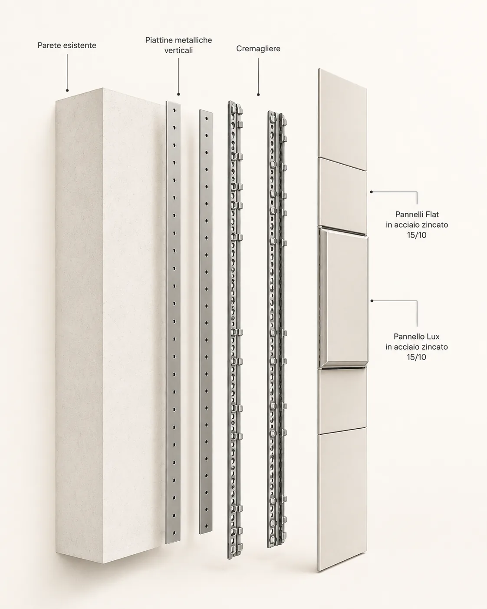
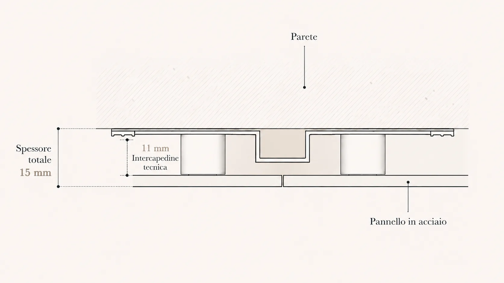
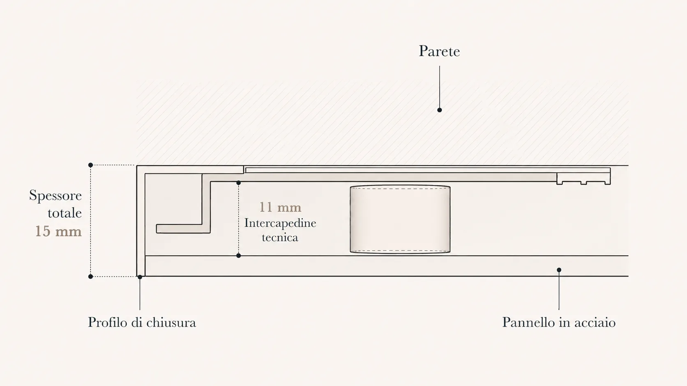
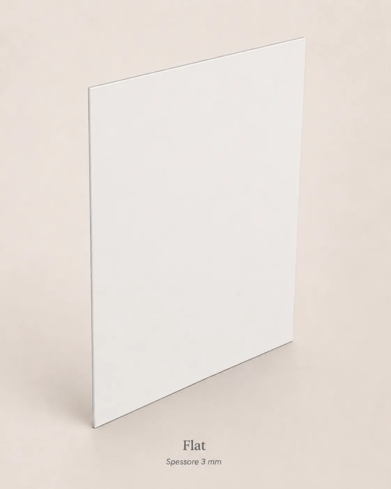
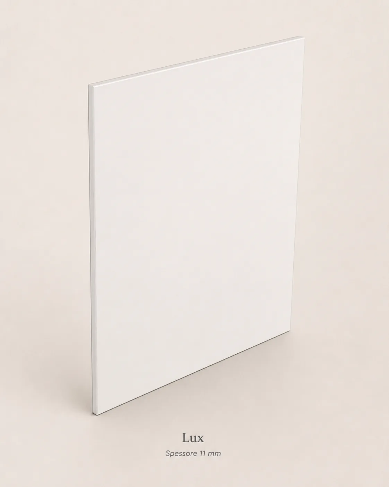
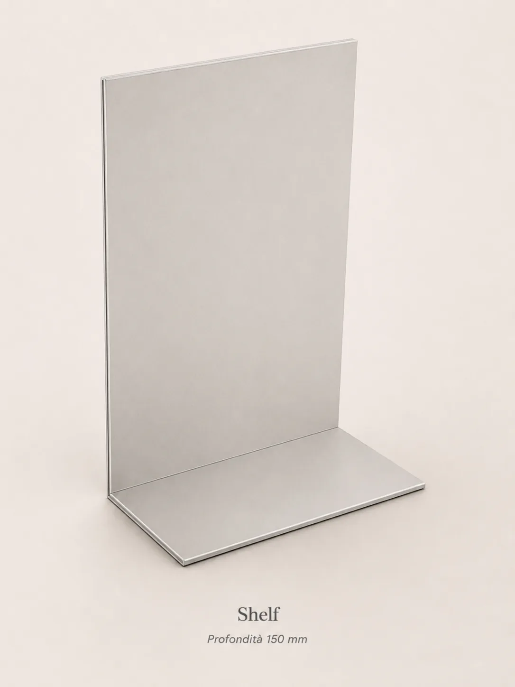
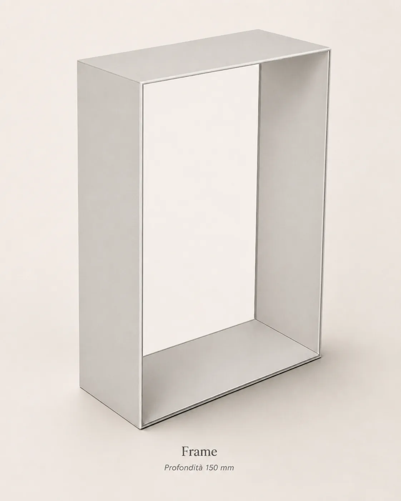
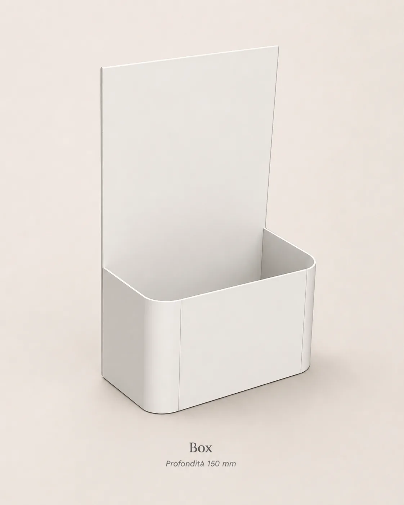
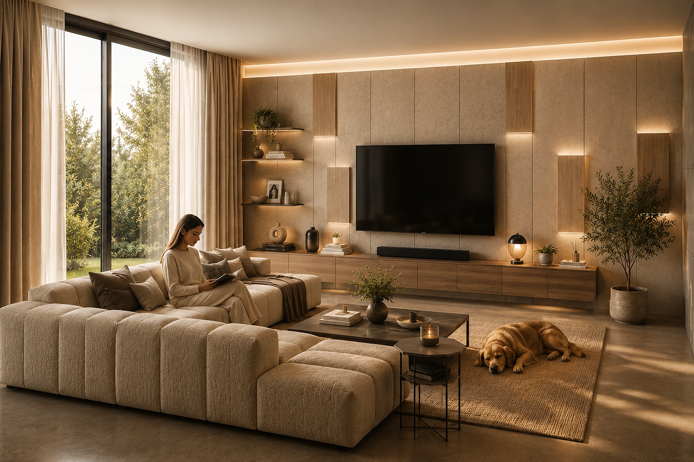

Il sistema
Sistema e
modularità
IconicWall è un sistema modulare di rivestimento che integra struttura, superfici e accessori in un’unica architettura sottile, precisa e senza tempo.
Scopri i dettagli →
L’infrastruttura resta.
Le superfici evolvono.
IconicWall nasce come struttura tecnica permanente: una base solida che rimane installata nel tempo e accoglie superfici, accessori e funzioni aggiornabili. Per questo il sistema può evolvere senza essere rifatto.

Il sistema
Il sistema.
Struttura portante
e componenti invisibili.
Una struttura tecnica avanzata sostiene e integra ogni elemento del sistema: superfici, accessori e dettagli tecnici si inseriscono con precisione, garantendo solidità, flessibilità e una resa estetica continua.
Dettagli
tecnici.
Sezione centrale
Il punto di incontro tra due pannelli.
La sezione centrale mostra il punto in cui due pannelli si accostano. Lo spessore totale tra parete e faccia visibile del pannello è 15 mm. L’intercapedine tecnica da 11 mm permette il passaggio dei cavi.
- Spessore totale
- 15 mm
- Intercapedine tecnica
- 11 mm
- Pannello in acciaio zincato
- 15/10


Sezione laterale / fine parete
Il dettaglio terminale del sistema.
La sezione laterale mostra il profilo di chiusura della parete. Il sistema mantiene gli stessi ingombri della sezione centrale: 15 mm totali e intercapedine tecnica da 11 mm.
- Spessore totale
- 15 mm
- Intercapedine tecnica
- 11 mm
- Profilo di chiusura
- presente
- Pannello in acciaio zincato
- 15/10
Le superfici.
Elementi disponibili.

Flat
- Spessore
- 3 mm
- Larghezze
- 300 / 600 / 900 mm
- Altezze standard
- 150 / 300 / 450 / 600 / 750 / 1200 / 1500 mm
Superficie complanare essenziale, pensata per costruire campiture continue e ordinate.


Lux
- Spessore
- 11 mm
- Sporgenza rispetto ai Flat
- 10 mm
- LED
- sopra / sotto / sopra e sotto
- Larghezze
- 300 / 600 / 900 mm
- Altezze standard
- 150 / 300 / 600 / 900 mm
Elemento in rilievo con luce integrata, progettato per creare accenti verticali e profondità architettonica.


Shelf
- Profondità
- 150 mm
- Larghezze
- 300 / 600 / 900 mm
- Altezze standard
- 300 / 450 / 600 mm
Mensola integrata che aggiunge funzione senza interrompere il linguaggio del sistema.


Frame
- Profondità
- 150 mm
- Larghezze
- 300 / 600 / 900 mm
- Altezze standard
- 300 / 450 / 600 mm
Cornice contenitore con volume netto e presenza grafica, adatta a oggetti e libri.


Box
- Profondità
- 150 mm
- Larghezze
- 300 / 600 / 900 mm
- Altezze standard
- 300 / 450 / 600 mm
Elemento contenitore integrato, pensato per organizzare e contenere.

Tutti i pannelli sono in acciaio zincato 15/10. Le altezze possono essere realizzate su progetto con passo 50 mm.
Un sistema.
Infinite interpretazioni.
Dal living al retail, dall’hospitality agli spazi contract, IconicWall interpreta esigenze diverse con la stessa logica costruttiva: struttura permanente, superfici intercambiabili, accessori integrati.
